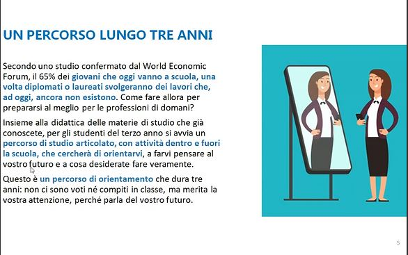
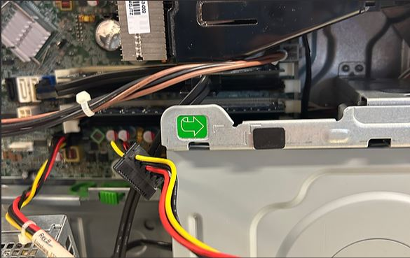
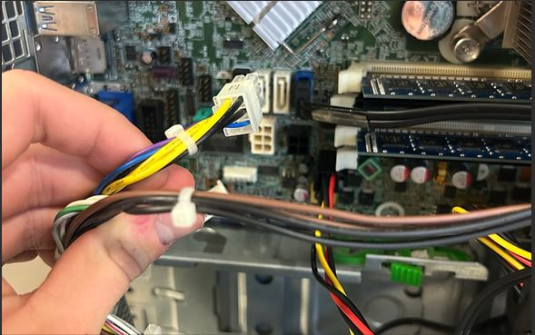
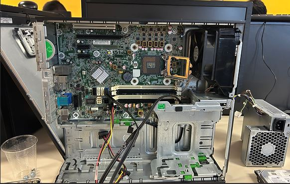
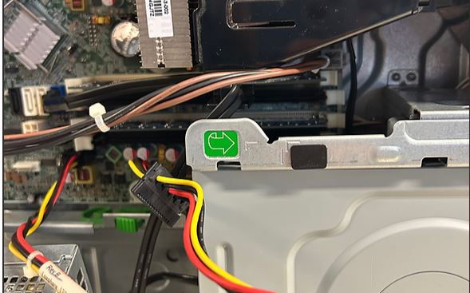

Progetto UST
Prof. Vairo
Uno dei primi progetti affrontati: un incontro online su Meet con il professor Vairo, organizzato dall'Ufficio Scolastico Territoriale di Reggio Emilia. Ci è stato spiegato cos'è l'FSL, a cosa serve e perché è importante. Il prof ci ha fatto riflettere su come certe esperienze possano aiutarci a scoprire nuovi interessi che potranno diventare i nostri futuri lavori.
- Comprensione del significato e dell'importanza dell'FSL
- Riflessione su orientamento e scelte future
Anche se è stato solo un incontro, mi ha permesso di comprendere al meglio a cosa servissero le attività FSL. Mi ha dato maggiore consapevolezza su ciò che può offrire il mondo del lavoro.




Progetto
Monta e Smonta
Attività pratica con il prof. Pontoriero: abbiamo smontato pezzo per pezzo vecchi computer della scuola, osservando da vicino scheda madre, hard disk, RAM e alimentatore. Poi li abbiamo rimontati cercando di renderli funzionanti. Toccare con mano i componenti è stato molto più efficace di qualsiasi lezione frontale, e lavorare in gruppo ha reso tutto più divertente.
- Riconoscimento e comprensione dei componenti hardware
- Lavoro di squadra e collaborazione
- Manualità, precisione e risoluzione di problemi tecnici
Siamo riusciti a completare tutto e rimettere in funzione i PC. Questa esperienza ha rafforzato ancora di più il mio interesse per il mondo dell'informatica.


Progetto FSL
BusConnect
Il progetto che mi ha colpito di più: siamo andati alla scuola media "Da Vinci" per insegnare la programmazione C++ alle classi seconde. Ci siamo trovati dall'altra parte della cattedra. Abbiamo preparato esercizi su variabili, cicli, condizioni e algoritmi, guidando i ragazzi passo per passo. Non è stato facile, ma l'impegno ha dato i suoi frutti.
- Comunicazione efficace e adattamento del linguaggio
- Gestione di piccoli gruppi
- Insegnamento base di C++ e algoritmi
Spiegare agli altri è una grande responsabilità, ma anche una bella sfida. Ho capito quanto sia importante mettersi nei panni di chi ti ascolta. È stata l'esperienza che mi ha fatto crescere di più.